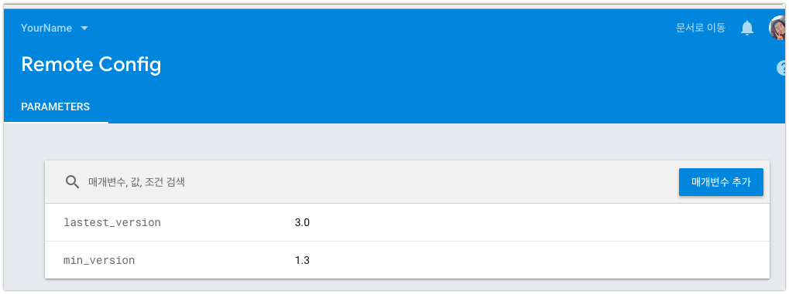
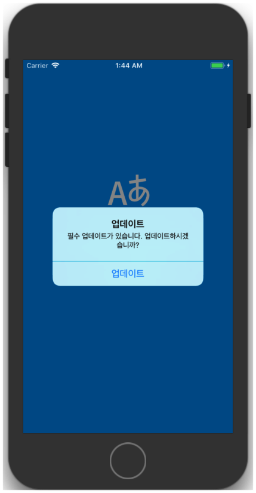
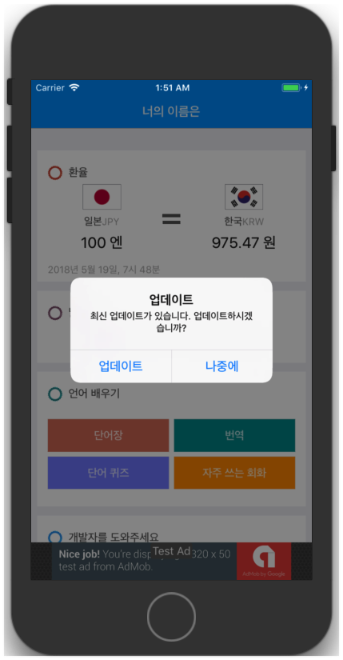

새로운 버전의 앱이 출시되면 AppStore에 등록되고, 설정 -> Apple ID -> iTunes 및 App Store -> 자동 다운로드(업데이트) 가 켜져있다면 보통 새벽시간에 자동 업데이트가 됩니다. 하지만 사용자가 자동 업데이트 기능을 꺼두었다면?
새로운 앱 버전의 출시를 알 수 없습니다.
가장 큰 문제는, 기존 배포버전에 치명적인 버그가 있을때 Hot-fix 배포를 하더라도 자동업데이트 옵션 미사용 사용자들에게는 새로운 버전을 안내할 수 없다는 것 입니다.
그래서 앱 개발 초기단계에 업데이트 안내 관련 코드를 넣는것이 필수라고 생각합니다.
업데이트의 구분
업데이트의 종류는 보통 강제업데이트, 선택업데이트 2가지로 나뉩니다.
강제 업데이트 란 앱이 새로운 버전으로 올라가면서 기존 앱과 호환이 불가하거나, 치명적인 버그가 있어 기존 앱의 이용자를 모두 필수적으로 새로운 버전의 앱을 사용하도록 할 때 사용합니다. 앱 실행시 강제 업데이트가 필요한지의 여부를 판단 후, 강제 업데이트가 필요하다면 앱 진입을 막고 앱스토어로 연결하여 업데이트를 할 수 있도록 안내합니다. 이 방법을 사용하면 기존 앱은 전혀 사용할 수 없게 되어, 기존 사용자들의 사용성은 떨어지게 되므로 꼭 사용해야하는 경우가 아니면 선택 업데이트 사용을 권장합니다.
선택 업데이트 란 앱이 새로운 버전으로 올라가지만 큰 변화가 없어서, 기존 앱과 호환이 가능하여 새로운 업데이트가 있다고만 안내합니다.
업데이트 안내 로직
사용자가 앱을 실행 or 백그라운드에서 포어그라운드로 진입
서버에서 앱 최소 지원 버전, 최신 앱 버전 을 내려받아 현재 앱의 버전과 비교합니다.
현재 앱의 버전 < 앱 최소 지원 버전 => 강제 업데이트 로직으로 분기
현재 앱의 버전 < 최신 앱 버전 => 선택 업데이트 로직으로 분기
앱의 최소, 최신 버전 관리
필수 또는 선택 업데이트의 필요 유무를 판단하기 위해서는 앱 최소지원 버전, 최신 앱 버전을 알 수 있어야 합니다. 이 정보를 위해 서버가 필요한가 싶은 이때! 우리에겐 Firebase가 있습니다.
AppDelegate.m의 didFinishLaunchingWithOptions 메소드입니다. 앱 진입 시점에서 window의 rootViewController를 LaunchScreen으로 바꿔치기합니다. 앱 버전을 확인하지 않고 바로 앱으로 진입하는 것을 막기 위함입니다. 그 이후 RemoteConfigManager에서 firebase의 remote config를 가져오는 메소드를 호출합니다. RemoteConfigManger의 코드입니다.
let minorA = Int(Array(versionA.split(separator: "."))[1])! let minorB = Int(Array(versionB.split(separator: "."))[1])! if minorA > minorB { returnComparisonResult.orderedDescending } elseif minorB > minorA { returnComparisonResult.orderedAscending } returnComparisonResult.orderedSame } }
Firebase Remote Config에서 데이터를 Fetch 한 뒤에 AppConfig 라는 클래스에 매핑을 합니다. 그 이후 plist에 있는 현재 앱의 버전과 AppConfig의 minVersion, lastestVersion을 비교하여 강제, 선택 업데이트 여부를 판단합니다. AppConfig 클래스의 변수들이 저렇게 생긴 이유는 Firebase에서 이렇게 설정했기 때문입니다.

compareVersion이라는 메소드로 현재버전과 최소, 최신 버전을 확인하여 적절한 AlertController를 노출합니다.
강제 업데이트 화면

AlertController의 버튼으로 업데이트 하나만 노출하며, 클릭시 앱스토어 이동하여 업데이트를 안내합니다. 그 외 앱의 진입방법은 없으므로 사용자는 업데이트 없이 기존 앱을 사용할 수 없습니다.
선택 업데이트 화면

AlertController의 버튼으로 업데이트와 나중에를 노출하여, 앱스토어로 이동하여 업데이트를 할지, 그냥 앱으로 진입할지 사용자에게 선택권을 부여합니다.
추가적으로
업데이트를 안 한 경우, 앱을 실행 할때마다 선택 업데이트 Alert이 뜨는데요, 사용자의 불편을 최소화 하기 위해서 7일간 보지않기 등을 추가하는 것이 좋습니다.
iOS 개발자가 업데이트 로직을 사용할 때 앱의 배포 과정
앱을 개발하면서 강제 업데이트를 사용할지, 선택 업데이트를 사용할지 결정
선택 업데이트라면?
새로운 버전의 앱이 AppStore에 노출됨을 확인하고 Remote Config 설정에서 lastestVersion을 최신버전으로 수정합니다.
강제 업데이트라면?
새로운 버전의 앱이 AppStore에 노출됨을 확인하고 Remote Config 설정에서 minVersion을 최신버전으로 수정합니다. 물론 lastestVersion도 최신으로 수정합니다.
주의사항
앱을 실행할 때 앱의 진입을 막고, remote config의 데이터를 가져오는 로직이 추가됩니다. firebase 서비스에 장애가 생길일은 드물겠지만, 만약 장애가 있다면 앱에 진입이 불가할 수 있습니다.
firebase remote config 설정이 즉시 적용은 아니고, 조금의 시간이 소요됩니다. (몇분정도?)
아직 앱스토어에 업데이트된 빌드가 업로드 되지 않은 상태에서, 강제 업데이트를 설정하면 사용자는 앱을 사용할 수 없습니다.
업데이트 빌드가 앱스토어에 노출되는 시점이 사용자마다 다를 수 있습니다. 어떤 사용자는 앱스토어에 들어가면 업데이트가 바로 뜨지만, 일부 사용자는 열기 버전으로 기존 버전만 사용가능 할 수 있습니다. 이때, 강제 업데이트 걸면 후자의 사람들은 업데이트가 가능해질 때까지 앱을 사용할 수 없습니다.